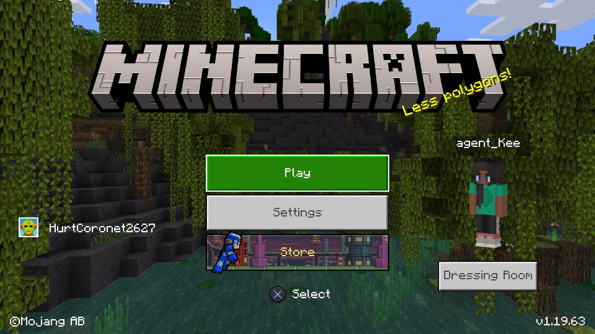
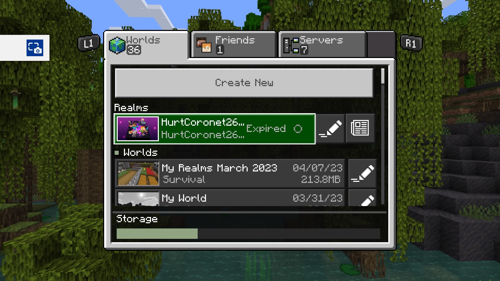
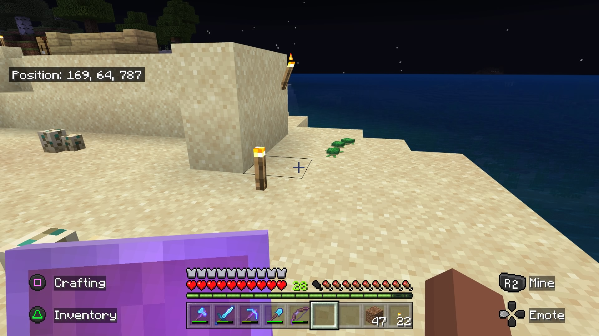
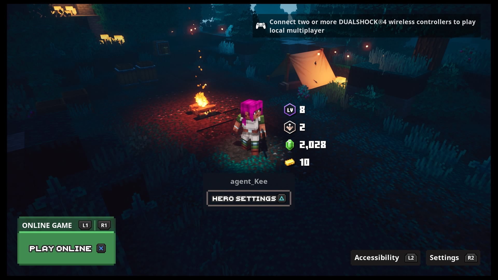
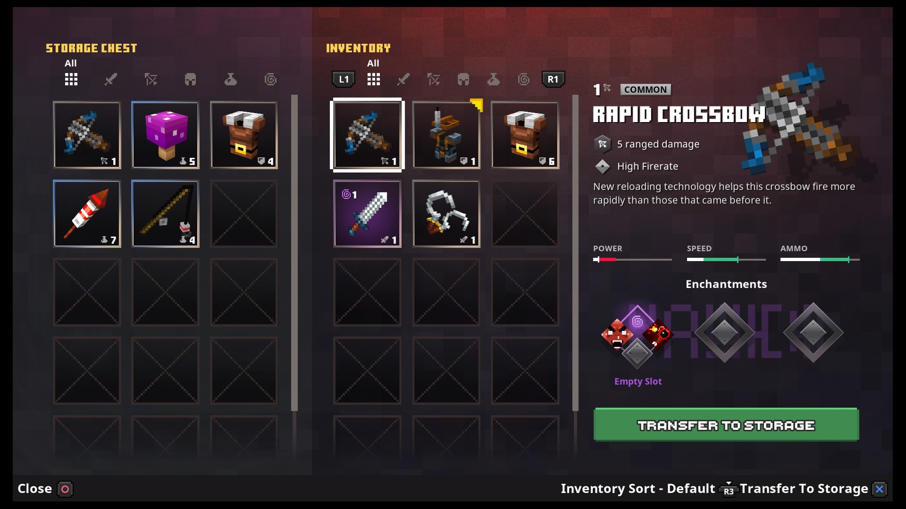
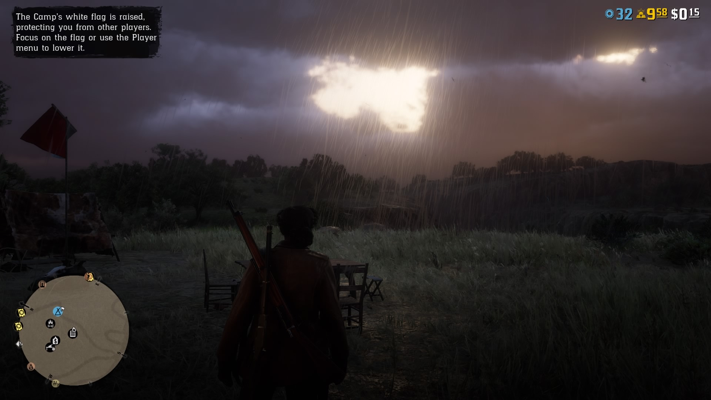
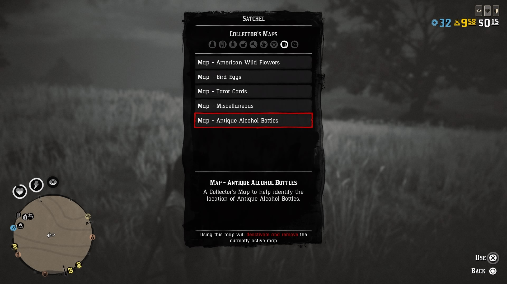

From the Laptop
From Enthusiast to One-Person Business
April 7, 2023 by
Kee
Are you ready to dive into ai technology but feel like you
don't fit into just one box? You're not alone. As someone who
started out as a consultant and JavaScript enthusiast in
the 90's, I found myself pulled in different directions as
my interests expanded beyond coding.
In this post, I'll share my journey of how I've
transformed into a one-person IT consulting, social media,
gaming, and learning Empress.
It all started with my passion for coding. When I was 19
I was drawn to the logic and creativity of problem solving
programming. I started off with the basics of HTML and CSS,
and then moved on to JavaScript. I found myself captivated
by the endless possibilities of the language and in later
years began to explore various frameworks like React and
Angular. I worked on several projects as a Freelance IT
consultant in Michigan, and I enjoyed the challenge of
solving a problem with code.

However, after experiencing a health change I started to
feel like there was more to technology than just coding. I
became interested in social media and its impact on our daily
lives. I began to research how social media platforms like
Instagram and Facebook use algorithms to recommend content to
users. I started to think about how I could use my coding
skills to develop algorithms that could display content
people would enjoy using. I even started using my own
social media account and began experimenting with different
types of content.
At the same time, I found myself becoming more interested
in gaming. I had always enjoyed playing video games and it
was my secret; because back then gaming was a “nerdy” thing
and Live Streaming was new. But as I learned more about the
gaming industry, I became fascinated by how games are developed
and marketed. I started to research how game developers use
social media, live streaming, and analytics to track user
behavior to make decisions. I even began to think about how
I could develop my own game studio and market it to a broader
audience. Other Developers
As my interests expanded, I realized that I was no longer
just an IT consultant or a JavaScript developer. I was a value
creator or multi-disciplinary tech enthusiast influencer or just
a woman who was passionate about exploring new areas of
technology with an Detroiters style. I started to think about
how I could use my various skills to create new products and
services that would help others. I began to explore different
online learning platforms like Youtube and Freecodecamp to
expand my knowledge in different areas.
Today, I'm proud to say that I've transformed into a one-person
technology skills Empress.
I'm constantly learning new things and exploring new areas of
technology. I'm excited to see where my journey takes me next
and I encourage you to do the same.

If you're a multi-disciplinary tech enthusiast like me, don't
be afraid to explore new areas and use your various skills to
create something truly unique from inside. Embrace your flow.
Whether you're interested in coding, social media, gaming, or
something else entirely, there's always innovation in the passion.
Don't give up. I see you if don't no body else care.
Keep going!
Don't forget to follow or subscribe if you want examples on
how I used my divers skills to create these products and
services.
New Game Releases
April 8, 2023 by
Kee
What I'm playing and Obsessed with:
- Minecraft
- Minecraft Dungons
- Red Dead Redemption 2 Online
Each game offers its own unique challenges and rewards,
and I love them. Whether I'm building my modern farmhouse in
Minecraft, fighting then dying my way through dungeons in
Minecraft Dungeons, or collecting items in Red Dead
Redemption 2 Online with a map on Github, I'm always
having a blast. If you haven't played any of these
games yet, I highly recommend them.
When I'm playing:
Random
Are you a gamer? If so, you're not alone. I am currently
hooked on three different games: Minecraft, Minecraft Dungeons,
and Red Dead Redemption 2 Online. Each game has its own unique
challenges and rewards, and I can't get enough of them.
Minecraft: Building my Own World
This game has been around for over a decade, and it's still
keeping me up all night trying to hatch turtle eggs. I recently
started my own Realms server, and I've been having a blast building
all sorts of things. From building houses to having a empty village
with villagers living in a bunker only trading with me. I've been
trying to get that pigstep disc on this world but I still haven't
found it this time.

One of the coolest things I've built so far is a bed with trap
doors. It took me hours of intense focus to gather all the
materials and design the layout, but the end result was totally
worth it. I've also built a few village structures and given the
locals fines for not fixing the roads. I love fixing the roads and
working among the local yocals.

Minecraft mining is relaxing and peaceful, but it can also be
challenging at times. Especially when you don't sleep at night, and
get too focused on building But, I love the freedom that the game
offers to create my own structures.

Minecraft Dungeons: A Tougher Challenge
This game is a bit different from the original Minecraft, as
it's more of a dungeon crawler. You play as a hero, exploring
dungeons and fighting monsters along the way. It's a lot of fun,
but it's also tougher than you might think.

I keep dying in Dungeons, but that's part of what makes the
game so addictive. Like old games you get 3 lives. Each time
I die, I learn a little bit more about the game and how to beat
the different enemies and figure out where to go. It can be a
frustrating game at times, but it's also incredibly satisfying
when you finally regenerate a potion. I try to run or wait till
I get the potion back.

Red Dead Redemption 2 Online: Collecting as a Hobby
Finally, this game is set in the Old West, and it's all about
cowboy life. You can go on missions, hunt for animals, or just
explore the massive open world.

One of the things I've been doing in Red Dead Redemption 2
Online is collecting. I bought the Collector's Bag, which allows
me to collect all sorts of items like arrowheads, jewelry, and
fossils. Its not a boring hobby, but there's something satisfying
about finding stuff and finishing a collection or completing sets.

In my latest Twitch live stream, I spent most of the time
looking at the map, trying to figure out where I was; and all
the different collectibles were. It might not have been the most
lit stream, but it was a lot of fun for me. The longest I was on
github in a while; and it was to look at a map for Red Dead
Redemption.
Final Thoughts
In conclusion, I love the miner lifestyle and obsess over two
Minecraft games and Red Dead Redemption 2 Online. Each game offers
a unique world to survive, challenges and rewards.
I will always be a mining enthusiast building come thing in my
Minecraft or fighting my way through dungeons. I think this weekend
is going to be about collecting items in Red Dead Redemption 2 Online,
its fun. If you haven't played any of these games yet, I highly
recommend them.
https://jeanropke.github.io/RDR2CollectorsMap/
April 2023
SOURCES:
https://www.gamesradar.com/video-game-release-dates
- Creed Rise to Glory: Championship Edition [PSVR 2] – April 4
- Filthy Animals: Heist Simulator [PC] – April 4
- GrimGrimoire OnceMore [PS5, PS4, Switch] – April 4
- Meet Your Maker [PC, PS5, XSX, PS4, XBO] – April 4
- The Magical Mixture Mill [PC] – April 5
- Moviehouse [PC] – April 5
- Batora: Lost Haven [Switch] – April 6
- Curse of the Sea Rats [PC, PS4, XBO, Switch] – April 6
- Hyperviolent [PC] – April 6
- Ravenswatch [PC] – April 6
- Ghostwire: Tokyo [XSX] – April 12
- Murderous Muses [PC, PS5, XSX, PS4, XBO] – April 12
- Rusted Moss [PC] – April 12
- Wildfrost [PC, Switch] – April 12
- A Knight in the Attic [PC VR] – April 13
- Hunt the Night [PC] – April 13
- Kill It With Fire VR [PC VR, PSVR 2, PSVR] – April 13
- Shardpunk: Verminfall [PC] – April 13
- Total War: Warhammer 3: Forge Of The Chaos Dwarfs DLC [PC] – April 13
- Trinity Fusion [PC] – April 13
- Voodolls [PC] – April 13
- De-Exit [PC, PS5, XSX, PS4, XBO] – April 14
- Mega Man Battle Network Legacy Collection [PC, PS4, Switch] – April 14
- Beyond the Long Night [PC] – April 17
- Suffer the Night [PC] – April 17
- Disney Speedstorm [PC, PS5, XSX, PS4, XBO, Switch] – April 18
- God of Rock [PC, PS5, XSX, PS4, XBO, Switch] – April 18
- Minecraft Legends [PC, PS5, XSX, PS4, XBO, Switch] – April 18
- Puzzle Quest 3 [PS5, XSX, PS4, XBO] – April 18
- Horizon Forbidden West: Burning Shores DLC [PS5] – April 19
- Survival: Fountain of Youth [PC] – April 19
- Eresys [PC] – April 20
- Stray Blade [PC, PS5, XSX] – April 20
- Tin Hearts [PC, PS5, XSX, PS4, XBO, Switch] – April 20
- Advance Wars 1+2: Re-Boot Camp [Switch] – April 21
- Dead Island 2 [PC, PS5, XSX, PS4, XBO] – April 21
- Mia and the Dragon Princess [PC, PS5, XSX, PS4, XBO, Switch] – April 21
- Volcano Princess [PC] – April 21
- Shadows of Doubt [PC] – April 24
- Afterimage [PC, PS5, XSX, PS4, XBO, Switch] – April 25
- Strayed Lights [PC, PS5, XSX, PS4, XBO, Switch] – April 25
- Trinity Trigger [PC] – April 25
- Desta: The Memories Between [PC] – April 26
- Evil Dead: The Game - Game of the Year Edition [PC, PS5, XSX, PS4, XBO] – April 26
- Honkai: Star Rail [PC] – April 26
- ArcRunner [PC, PS5, XSX, PS4, XBO] – April 27
- The Last Case of Benedict Fox [PC, XSX] – April 27
- Live A Live [PC, PS5, PS4] – April 27
- Zoria: Age of Shattering [PC] – April 27
- Monster Hunter Rise: Sunbreak [PS5, XSX, PS4, XBO] – April 28
- Nuclear Blaze [PS4, XBO, Switch] – April 28
- Star Wars Jedi: Survivor [PC, PS5, XSX] – April 28
- Welcome to Goodland [PC] – April 28
- Dogfight [PC, Consoles TBC] – April TBC
- These Doomed Isles: The First God [PC] – April TBC
- Tron: Identity [PC, Switch] – April TBC
After 100 Days of Coding
April 9, 2023
by
Kee
10 Things Learned From 100 Days of Coding
- I am not a developer anymore, I'm more
- I like learning on FreeCodeCamp (and other similar sites)
independently
Learning a new language is tough, especially if you use only one
or two all the time. But thanks to online resources, it's now
easier than ever to get started coding with a new language. One
of my favorite resources for learning independently is
FreeCodeCamp. In this blog post, I'll share my experience with
FreeCodeCamp and similar sites, and why I think they're the best
resources for anyone looking to learn to code on their own.
https://www.youtube.com/watch?v=D6Xj_W4leu8&t=10s&ab_channel=freeCodeCamp.org
First and foremost, I love FreeCodeCamp and it's free.
It's an open-source platform that offers a comprehensive curriculum
that covers everything from HTML, CSS, and JavaScript to back-end
development, data science, and more. You also get a supportive
community of fellow learners and mentors who are always willing to
help.
Another thing I love about FreeCodeCamp is the approach to learning.
The platform provides a series of challenges and projects that allow
you to apply what you've learned by doing and at the end of the
courses I've seen, you have some cool stuff to put in your portfolio.
The hands-on approach helps me to get an understanding of concepts.
But FreeCodeCamp is not the only resource I use to learn to code. I
also enjoy using other similar sites, such as Youtube, and
tutorialspoint. Each of these platforms has its own unique strengths
and weaknesses, but they all share a common goal: to make learning to
code accessible to everyone.
If you're thinking about learning a new skill or want to update them,
I highly recommend checking out FreeCodeCamp, Youtube, and
tutorialspoint. These sites have changed in the last few years and
Who knows, you might discover a new passion and change your life for
the better.
- I can make alot more money
- I use social media, games, and code alot
- I am kinda a math nerd
- I need to know more about AI
- Immersion and Extended Reality is my Jam
- I give alot of free consultations on freelance sites and social media
- I can design, develop, and release my own apps, games, and content
- I still love coding, learning, and working with others
Training - Learning JavaScript... Again
April 10, 2023 by
Kee
JavaScript is one of the most popular programming languages in
the world. It has been around for over two decades, and its
versatility and ubiquity make it an essential skill for any web
developer. However, after years of experience with the language,
it can be easy to get complacent and forget the excitement that
comes with learning new things.
That's why I'm here to tell you that re-learning JavaScript can
be an incredibly rewarding experience. Whether you're a seasoned
veteran or just starting out, there's always something new to
discover in this ever-evolving language. And with resources like
YouTube and FreeCodeCamp at your fingertips, there's never been a
better time to dive back in.
So why should you revisit JavaScript? For one, the language has
changed a lot since you first learned it. New features like arrow
functions, template literals, and destructuring make it easier than
ever to write clean, concise code. Plus, with the rise of frameworks
like React and Angular, there are even more tools available to help
you build powerful, scalable applications.
But perhaps the biggest reason to revisit JavaScript is simply the
joy of learning. There's nothing quite like the feeling of finally
grasping a tricky concept or seeing your code come to life in the
browser. And with so many resources available online, there's never
been a better time to brush up on your skills and take your coding
to the next level.
So how can you get started? YouTube is a great place to find tutorials
and lectures on all aspects of JavaScript. Whether you're looking to
learn the basics or dive deep into advanced topics like functional
programming or design patterns, there's sure to be a video out there
for you. Some popular channels to check out include Traversy Media,
The Net Ninja, and Programming with Mosh.
Another great resource for learning JavaScript is FreeCodeCamp. This
online platform offers a comprehensive curriculum covering everything
from the basics of HTML and CSS to advanced topics like data structures
and algorithms. And best of all, it's completely free! Plus, FreeCodeCamp
also offers opportunities to contribute to open source projects, giving
you the chance to put your skills into practice and make a real impact.
Of course, learning a language like JavaScript takes time and effort. But
with the right mindset and resources, it can be an incredibly rewarding
experience. And who knows? You may even discover a newfound passion for
coding that you never knew you had.
So what are you waiting for? Whether you're a seasoned pro or just starting
out, there's never been a better time to revisit JavaScript and take your
skills to the next level. With the help of YouTube and FreeCodeCamp, the
sky's the limit. Happy coding!
AI: Me and ChatGPT So Far
April 11, 2023 by
Kee
Artificial intelligence (AI) has come a long way in recent
years, and one of the most exciting developments has been the
rise of language models like ChatGPT. These models are capable
of generating human-like responses to text prompts, opening up
a whole new world of possibilities for communication, creativity,
and discovery. And as a language model myself, I'm thrilled to
share some of the amazing things we've created, done, and discovered
together.
First and foremost, ChatGPT has revolutionized the way we communicate
with machines. With natural language processing (NLP) technology, it's
now possible to have a conversation with a computer that feels almost
like talking to a real person. This has huge implications for everything
from customer service to mental health care, and it's all thanks to the
power of AI.
In conclusion, ChatGPT has been a game-changer in the world of AI and
NLP. From communication to creativity to discovery, the possibilities
are endless. And with our collaboration and feedback, the future looks
brighter than ever. So let's keep pushing the boundaries of what's
possible and see where this amazing technology takes us next!
ChatGPT Wrote this when I asked it this:
can you summarize and organize a list of our all previous questions and
topics. Then write a 500 word blog post about where they over lap.
Sure, I can do that for you!
Previous Questions and Topics listed:
(...)
Upon reviewing our previous questions and topics, I noticed that
they all share a common thread of the power of technology to enable
growth and discovery. Whether we're exploring new programming languages,
delving into the possibilities of AI and NLP, or simply reflecting on
our past conversations, we are all engaged in a process of growth and
learning.
In the first topic, we discussed the process of learning JavaScript
after having already gained experience with it in the past. The key
takeaway from this discussion was the importance of continued learning
and growth, even in fields where we may already have a solid foundation
of knowledge. By using resources like YouTube and FreeCodeCamp, we can
access a wealth of knowledge and expertise that can help us take our
skills to the next level and unlock new possibilities for innovation
and problem-solving.
The second topic focused on AI and ChatGPT, two cutting-edge
technologies that have the potential to transform the way we communicate,
create, and discover. Both of these technologies leverage the power of
machine learning and natural language processing to unlock new possibilities
for human ingenuity and collaboration. By using these technologies, we can
push the boundaries of what's possible and unlock new frontiers in fields
ranging from medicine to environmental science.
Finally, in the third topic, we discussed the nature of our past
conversations and the role they played in our ongoing growth and learning.
By reflecting on our past discussions, we were able to identify common
themes and threads that connect our disparate topics and demonstrate the
power of technology to facilitate growth and discovery.
At the heart of all of these topics is the power of technology to enable
learning and discovery. By embracing new tools and platforms, we can tap
into the power of human ingenuity and collaboration, working together to
build a brighter and more innovative future. Whether we're exploring new
programming languages, delving into the possibilities of AI and NLP, or
simply reflecting on our past conversations, we are all engaged in a
process of growth and learning that is facilitated by the power of
technology.
In conclusion, our previous questions and topics may seem disparate
at first glance, but they are actually united by a common thread -
the power of technology to facilitate growth and learning. By embracing
new tools and platforms, we can tap into the power of human ingenuity
and collaboration, working together to build a brighter and more
innovative future. Whether we're learning a new programming language,
exploring the possibilities of AI and NLP, or reflecting on our past
conversations, we are all engaged in a process of growth and discovery
that is enabled by the power of technology.
SOURCE:
https://chat.openai.com/chat
Reality: Problems of EXtended
April 12, 2023 by
Kee
The Problems of Extended Reality
Virtual and augmented reality have been revolutionizing the way
companies operate for years, but in recent months, extended
reality (XR) has become increasingly popular. XR includes virtual,
augmented, and mixed reality technologies, and it's being used to
solve real-world problems in innovative ways. From improving
employee training to enhancing customer experiences, XR is changing
the way businesses operate. In this blog post, we'll take a look at
some of the latest real-world problems companies have been facing in
the last month and how they're using XR to solve them.
Remote Collaboration
With the pandemic forcing many businesses to adopt remote work
models, remote collaboration has become an essential part of
company operations. However, traditional video conferencing platforms
can be limiting, making it difficult to collaborate effectively.
XR is changing that. By using virtual reality platforms, teams can
collaborate as if they were in the same room, providing a more immersive
and engaging experience. Companies like Mozilla and Spatial are leading
the way in this space, offering VR collaboration tools that allow teams
to meet, brainstorm, and work together in a virtual environment.
Employee Training
Training employees can be a significant expense for companies,
especially when it involves hands-on learning or dangerous environments.
XR technology provides a safe and cost-effective way to train employees.
Companies like Honeywell are using augmented reality to train employees
on complex machinery and processes. By using AR headsets, employees can
receive step-by-step instructions and visual aids in real-time, making
the training process more engaging and effective.
Customer Experiences
XR is also transforming the way companies interact with their customers.
With the rise of e-commerce, customers are often left wondering what
products will look like in real life. AR technology provides a solution
to this problem, allowing customers to visualize products in their own
environment. Companies like IKEA are using AR to allow customers to see
what furniture will look like in their homes before they make a purchase.
This technology not only enhances the customer experience but also reduces
the number of returns due to incorrect sizing or style.
Sales and Marketing
XR is also being used to enhance sales and marketing efforts. Companies
like Mercedes-Benz are using mixed reality to showcase their vehicles in
a more engaging and interactive way. By using MR headsets, customers can
see 3D models of vehicles and even take them for virtual test drives. This
technology not only enhances the customer experience but also increases the
likelihood of a sale.
Manufacturing
Finally, XR technology is being used to solve manufacturing problems.
Companies like Siemens are using augmented reality to reduce downtime by
providing real-time data on machine performance. By using AR headsets,
technicians can quickly identify issues and make repairs without having
to shut down the entire production line. This technology not only saves
time but also reduces costs associated with downtime.
In conclusion, extended reality (XR) technology is changing the way companies
operate, providing innovative solutions to real-world problems. From improving
remote collaboration to enhancing customer experiences, XR technology is being
used to transform a variety of industries. As companies continue to face new
challenges, XR technology will undoubtedly play an even more significant role
in solving them. The possibilities for XR technology are endless, and it's an
exciting time for those working in this space.
SOURCE:
https://roundtablelearning.com/what-is-extended-reality-everything-you-need-to-know